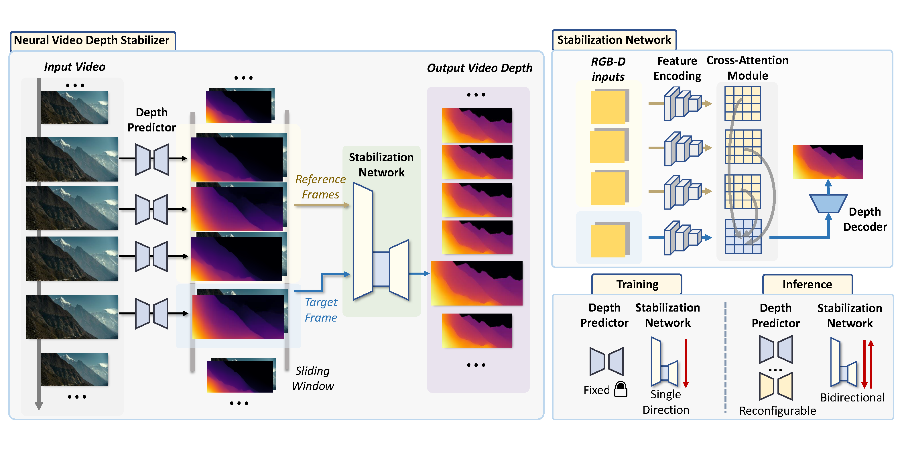
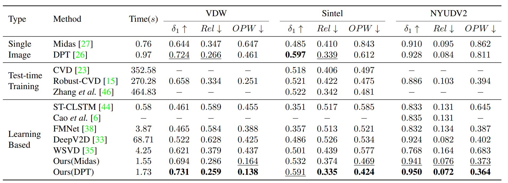

Neural Video Depth Stabilizer
2Adobe Research 3Nanyang Technological University
Abstract
Video depth estimation aims to infer temporally consistent depth. Some methods achieve temporal consistency by finetuning a single-image depth model during test time using geometry and re-projection constraints, which is inefficient and not robust. An alternative approach is to learn how to enforce temporal consistency from data, but this requires well-designed models and sufficient video depth data. To address these challenges, we propose a plug-and-play framework called Neural Video Depth Stabilizer (NVDS) that stabilizes inconsistent depth estimations and can be applied to different single-image depth models without extra effort. We also introduce a large-scale dataset, Video Depth in the Wild (VDW), which consists of 14,203 videos with over two million frames, making it the largest natural-scene video depth dataset to our knowledge. We evaluate our method on the VDW dataset as well as two public benchmarks and demonstrate significant improvements in consistency, accuracy, and efficiency compared to previous approaches. Our work serves as a solid baseline and provides a data foundation for learning-based video depth models. We will release our dataset and code for future research.
Video
Method&Experiments
-
NVDS
Framework -
Visual
Comparisons -
Quantitative
Results
-
Overview of the neural video depth stabilizer. Our framework consists of a depth predictor and a stabilization network. The depth predictor can be any single-image depth model which produces initial flickering disparity maps. Then, the stabilization network refines the flickering disparity maps into temporally consistent ones. The stabilization network functions in a sliding window manner: the frame to be predicted fetches information from adjacent frames for stabilization. During inference, our NVDS framework can be directly adapted to any off-the-shelf depth predictors in a plug-and-play manner. We also devise bidirectional inference to further improve consistency.
 -
Visual comparisons. DeepV2D and Robust-CVD show obvious artifacts in those videos. We draw the scanline slice over time; fewer zigzagging pattern means better consistency. Compared with the other video depth methods, our NVDS is more robust on natural scenes and achieves better spatial accuracy and temporal consistency.

-
Comparisons with the state-of-the-art approaches. We report the total time of processing eight 640 × 480 frames by different methods on one NVIDIA RTX A6000 GPU. Best performance is in boldface. Second best is underlined.

Dataset
Current video depth datasets are limited in both diversity and volume. To compensate for the data shortage and boost the performance of learning-based video depth models, we elaborate a large-scale natural- scene dataset, Video Depth in the Wild (VDW). We collect stereo videos from four data sources: movies, animations, documentaries, and web videos. To our best knowledge, our VDW dataset is currently the largest video depth dataset with the most diverse video scenes. We will build the official website to release VDW dataset for the community. We will update the website and links when we are ready. Stay tuned!
.